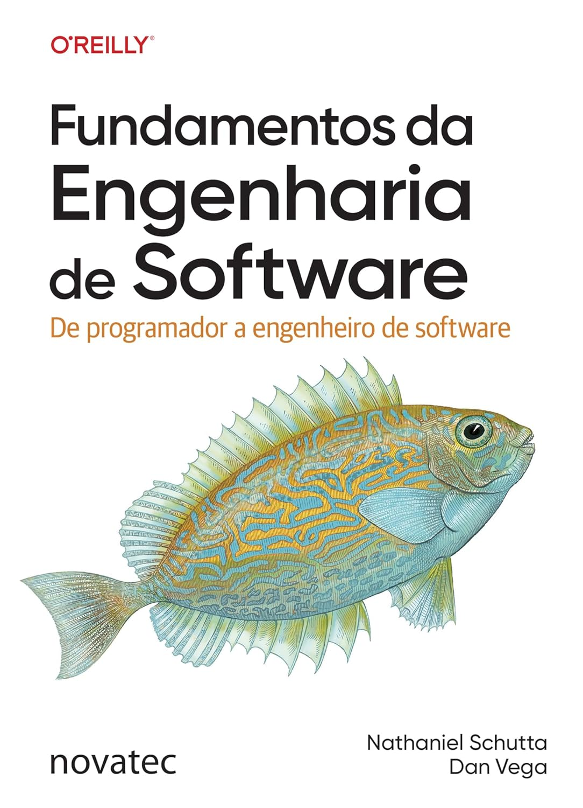
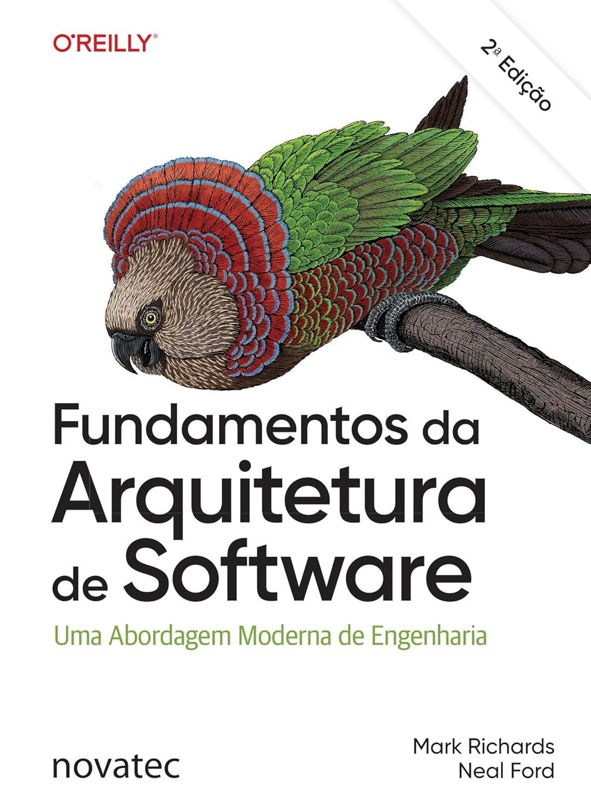

Entendendo Algoritmos
Um guia ilustrado para programadores e outros curiosos. Um algoritmo nada mais é do que um procedimento passo a passo para a resolução de um problema.
BuyBooks I recommend for learning, thinking and building better software.
Um guia ilustrado para programadores e outros curiosos. Um algoritmo nada mais é do que um procedimento passo a passo para a resolução de um problema.
BuyApresentação de Daniel Zingaro Estruturas de dados são fundamentais para organizar dados de forma eficiente. Também são uma parte importante da maioria das entrevistas de emprego de TI!
Buy
Neste livro, Dan e Nate ensinam rapidamente os fundamentos que anos de educação formal muitas vezes não abordam. Suas décadas de experiência transparecem nestas páginas, sintetizando, com muita clareza e tato, o que desenvolvedores profissionais devem fazer e o que evitar.
Buy
Desenvolvedores que desejam ir além da codificação para avançar em suas carreiras almejam se tornar arquitetos de software, mas não existia nenhum guia para ajudá-los a fazer isso até agora.
BuyDominar os atuais conceitos de desenvolvimento de software pode ser assustador se você está iniciando em Java. Raoul-Gabriel Urma e Richard Warburton mostram como desenvolver vários projetos reais e ainda aprender práticas recomendadas no processo.
Buy